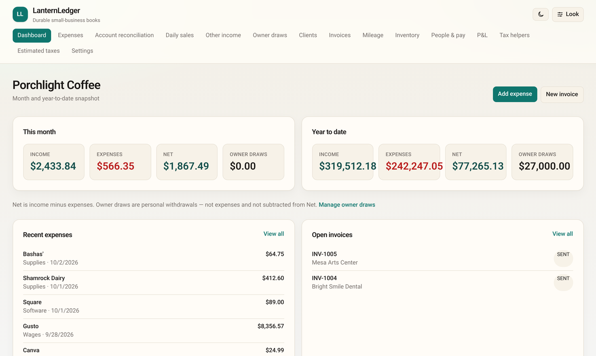
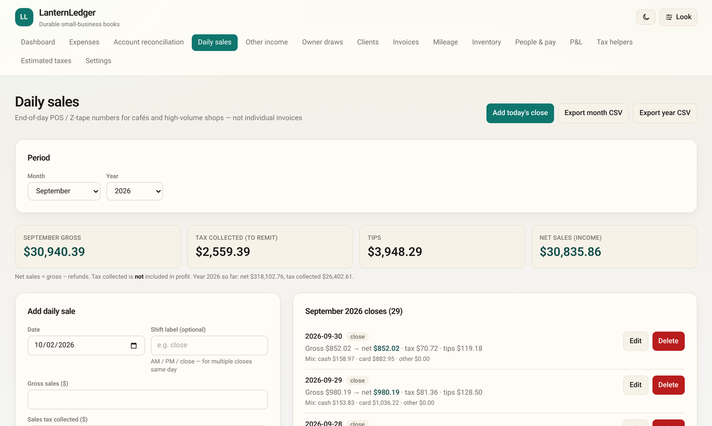
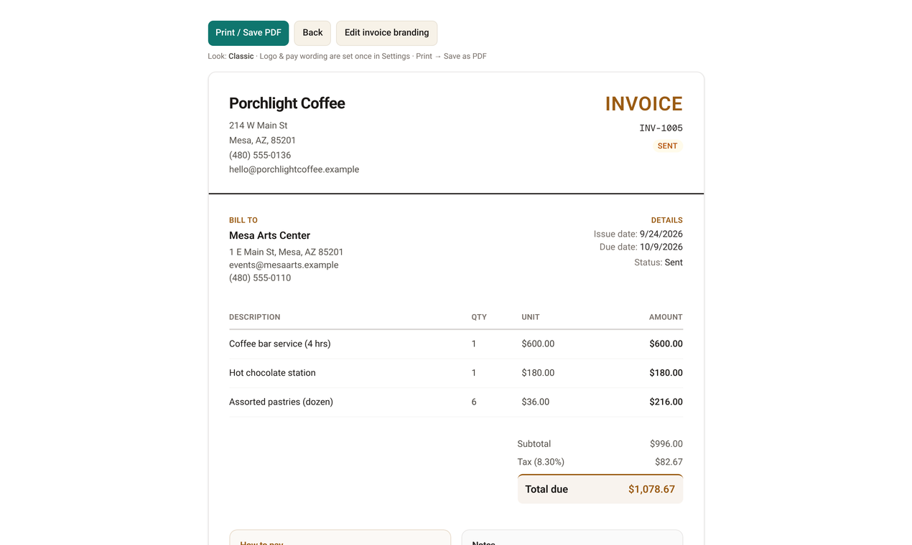
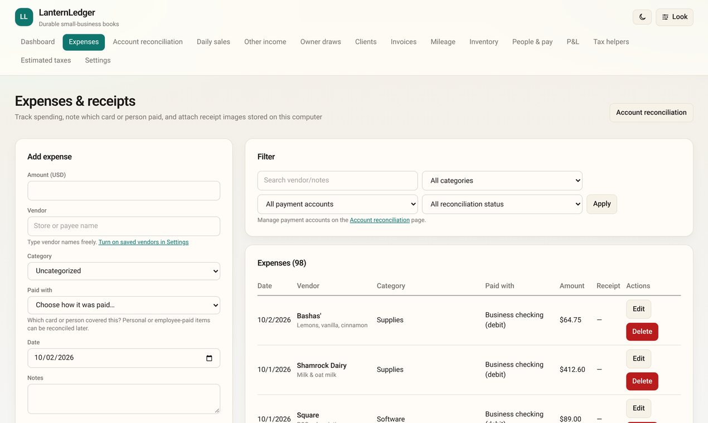
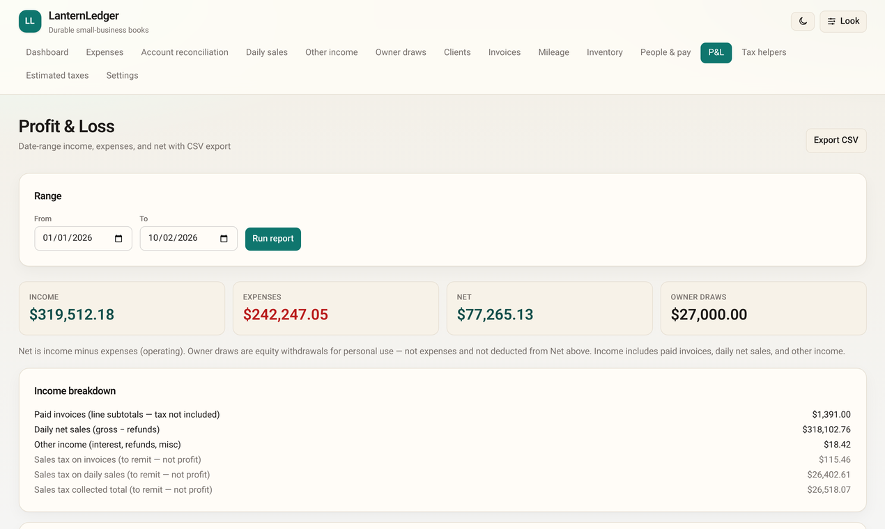
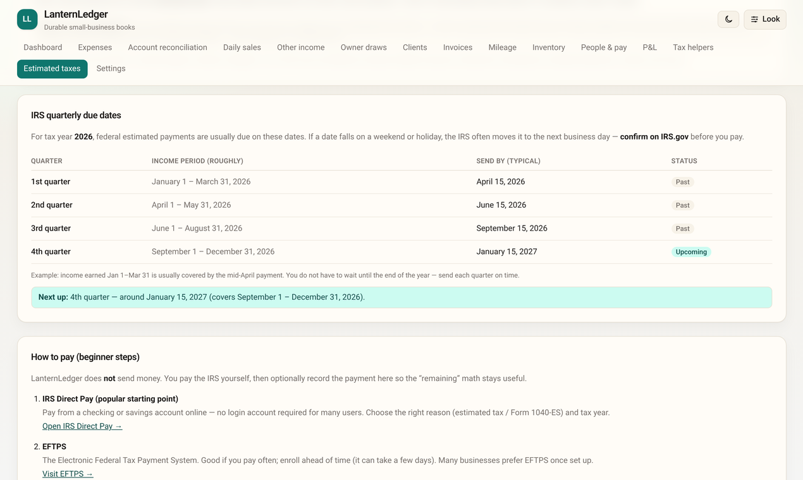
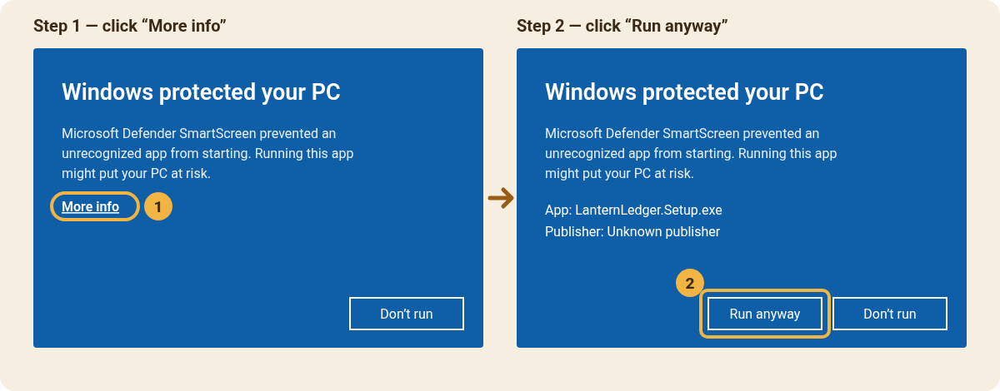

☕ Daily sales
Type in your end-of-day register totals: sales, sales tax collected, tips, cash and card. Sales tax is kept separate, so you know what you owe the state.
Free bookkeeping for Windows
LanternLedger tracks your daily sales, invoices, expenses, mileage and taxes in plain language. No account, no subscription, no cloud. Your books never leave your computer.
Version 1.0.0 · Windows 10 or 11 (64-bit) · about 223 MB · Terms of use

New sole proprietors and single-member LLC owners. Coffee shops, food trucks, salons, makers, landscapers, freelancers. If you want tidy books without learning accounting software, LanternLedger is for you.
Type in your end-of-day register totals: sales, sales tax collected, tips, cash and card. Sales tax is kept separate, so you know what you owe the state.
Make clean, printable invoices with your logo. Save them as PDF, mark them paid, and see who still owes you.
Log what you spend, sorted into tax-friendly categories. Attach a photo of the receipt. Note which card paid.
Write down business trips and LanternLedger works out the deduction with the IRS rate for that date.
Record what you pay helpers and see who crossed the line for a 1099 at year end.
Track the money you take home for yourself, kept apart from business expenses.
See money in, money out, and what’s left for any date range. Export it for your tax preparer.
The IRS quarterly due dates in plain English, how to pay, and a ballpark of what to set aside.
Backup copies of your books are saved for you automatically. Export everything to a file, or restore an earlier copy in a couple of clicks.
Shown with made-up books for “Porchlight Coffee.”





There’s nothing to sign up for. Install it and start.
Your books are saved in a folder on your computer (%APPDATA%\LanternLedger). Nothing is uploaded anywhere.
LanternLedger makes backup copies of your books automatically while you work and keeps a daily copy for the last 30 days. You can also export a full copy to a USB drive or another folder, and restore from it.
Every file has a unique fingerprint (called a SHA-256). The fingerprint of LanternLedger.Setup.exe (version 1.0.0) is:
cbbe6d0980a3e43e9a3ac0005129e6ed0ff894accf82e820db81c931ff153644
To compare: in File Explorer, open your Downloads folder, click the address bar, type powershell and press Enter. Then type Get-FileHash .\LanternLedger.Setup.exe and press Enter. The long number should match the one above. Want a second opinion? You can scan the file for free at VirusTotal.
LanternLedger is made by one person and isn’t “signed” with a paid Microsoft certificate yet, so Windows doesn’t recognize the publisher and shows a blue warning the first time. That’s expected. Here’s how to get past it:

In the app, open Settings → App updates → Check for updates. Installing a newer version keeps your books right where they are.
Yes. No trial, no subscription, no ads. If it helps your business, you can buy me a coffee — totally optional.
Not right now. LanternLedger is Windows-only (Windows 10 and 11, 64-bit).
On your computer, in %APPDATA%\LanternLedger (paste that into the File Explorer address bar to open it). It isn’t sent to any server, and uninstalling the app does not delete your books.
LanternLedger saves backup copies automatically while you work and keeps a daily copy for the last 30 days. In Settings you can export your books to a file, choose a second backup folder (like a USB drive or OneDrive), and restore an earlier copy. Your computer can still fail, so keep a copy somewhere else too.
No. The tax pages are guidance, not tax advice: they organize your numbers, list IRS due dates, and give a ballpark. LanternLedger doesn’t file anything or send money. Check important decisions with a CPA, enrolled agent, or the IRS.
For many very small businesses, yes — if you mostly need sales, invoices, expenses, mileage and a profit & loss. It doesn’t do bank feeds, payroll tax filing, or double-entry accounting.
No. It works fully offline. You only need the internet to download it and to check for updates.
Because the installer isn’t signed with a paid certificate yet. See Install help above for the two clicks to get past it, and Is it safe? to check the file’s fingerprint.
Please email Mstidham345@gmail.com. Every message gets read.
Windows 10 or 11 (64-bit) · No account needed